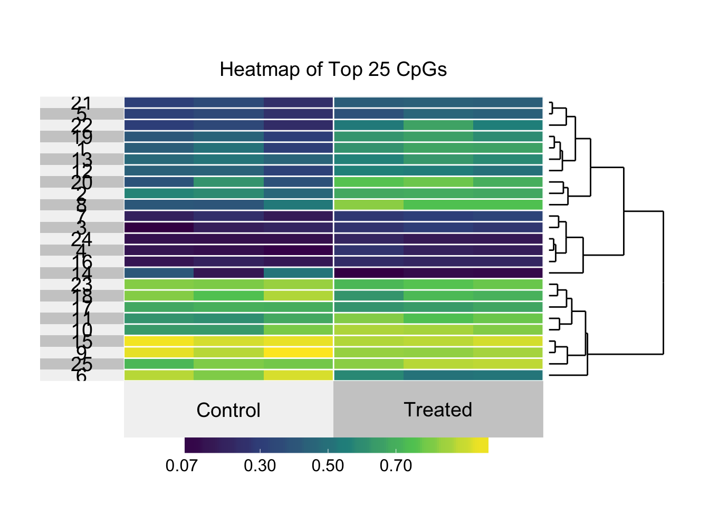

Targeted Data-Adaptive Estimation and Inference for Differential Methylation Analysis
Nima Hejazi
2018-04-15
Abstract
We present a general algorithm for the nonparametric estimation of effects of DNA methylation at CpG sites scattered across the genome, complete with honest statistical inference for such estimates. This approach leverages variable importance measures, a class of parameters that arise in the study of causal inference. The parameters we present are defined in such a manner that they provide targeted estimates of the relative importance of CpG sites in the case of binary exposures/treatments assigned at the level of subjects. Such parameters come equipped with rich scientific interpretations, providing an avenue to move beyond linear models, applying modern developments in machine learning to estimating quantities of scientific interest in computational biology.Introduction
DNA methylation is a fundamental epigenetic process known to play an important role in the regulation of gene expression. DNA CpG methylation involves the addition of a methyl group (\(\text{CH}_3\)) to the fifth carbon of the cytosine ring structure to form 5-methylcytosine. Numerous biological and medical studies have implicated DNA CpG methylation as playing a role in disease and development (Robertson 2005). Perhaps unsurprisingly then, biotechnologies have been developed to study the molecular mechanisms of this epigenetic process. Modern assays, like the Illumina Infinium Methylation assay, allow for quantitative interrogation of DNA methylation of CpG sites scattered across the genome at single-nucleotide resolution; moreover, much effort has been invested, by the bioinformatics community, in the development of tools for properly removing technological effects that may contaminate biological signatures measured by such assays. Despite these advances in both biological and bioninformatical techniques, most statistical methods available for the analysis of data produced by such assays rely on over-simplified (often generalized linear) models.
Here, we present an alternative to such statistical analysis approaches, in the form of nonparametric estimation procedures inspired by machine learning and causal inference. Specifically, we provide a technique for obtaining estimates of nonparametric variable importance measures (VIM), parameters with rich scientific interpretations under the standard (untestable) assumptions used in statistical causal inference, defining a limited set of VIMs specifically with respect to the type of data commonly produced by DNA methylation assays. For VIMs defined in such a manner, targeted minimum loss-based estimates may be readily computed based on the data made available by DNA methylation assays. Our contribution, methyvim is an R package that provides facilities for performing differential methylation analyses within exactly this scope.
As the substantive contribution of our work is an estimation procedure, we focus on data produced by 450k and 850k (EPIC) arrays made by Illumina and assume that data has been subjected to proper quality control and normalizaton procedures, as outlined by others in the computational biology community (Fortin et al. 2014, @dedeurwaerder2013comprehensive). For a general discussion of the framework of targeted minimum loss-based estimation and the role this approach plays in statistical causal inference, the interested reader is invited to consult van der Laan and Rose (2011) and van der Laan and Rose (2017). For a more general introduction to statistical causal inference, Pearl (2009) serves well.
Methodology
The core functionality of this package is made available via the eponymous methyvim function, which implements a statistical algorithm designed to compute targeted estimates of VIMs, defined in such a way that the VIMs represent parameters of scientific interest in computational biology experiments; moreover, these VIMs are defined such that they may be estimated in a manner that is very nearly assumption-free, that is, within a fully nonparametric statistical model. The statistical algorithm consists in several major steps:
Pre-screening of genomic sites is used to isolate a subset of sites for which there is cursory evidence of differential methylation. For the sake of computational feasibility, targeted minimum loss-based estimates of VIMs are computed only for this subset of sites. Currently, the available screening approach adapts core routines from the
limmaR package. Future releases will support functionality from other packages (e.g.,randomForest,tmle.npvi). Following the style of the function for performing screening vialimma, users may write their own screening functions and are invited to contribute such functions to the core software package by opening pull requests at the GitHub repository.Nonparametric estimates of VIMs, for the specified target parameter, are computed at each of the CpG sites passing the screening step. The VIMs are defined in such a way that the estimated effects is of an exposure/treatment on the methylation status of a target CpG site, controlling for the observed methylation status of the neighbors of that site. Currently, routines are adapted from the
tmleR package. Future releases will support doubly-robust estimates of these VIMs (via thedrtmlepackage) and add parameters for continuous treatments/exposures (via thetmle.npvipackage).Since pre-screening is performed prior to estimating VIMs, we make use of a multiple testing correction uniquely suited to such settings. Due to the multiple testing nature of the estimation problem, a variant of the Benjamini & Hochberg procedure for controlling the False Discovery Rate (FDR) is applied (Benjamini and Hochberg 1995). Specifically, we apply the “modified marginal Benjamini & Hochberg step-up False Discovery Rate controlling procedure for multi-stage analyses” (FDR-MSA), which is guaranteed to control the FDR as if all sites were tested (i.e., without screening) (Tuglus and van der Laan 2009).
Parameters of Interest
For discrete-valued treatments or exposures:
The average treatment effect (ATE): The effect of a binary exposure or treatment on the observed methylation at a target CpG site is estimated, controlling for the observed methylation at all other CpG sites in the same neighborhood as the target site, based on an additive form. In particular, the parameter estimate represents the additive difference in methylation that would have been observed at the target site had all observations received the treatment versus the counterfactual under which none received the treatment.
The relative risk (RR): The effect of a binary exposure or treatment on the observed methylation at a target CpG site is estimated, controlling for the observed methylation at all other CpG sites in the same neighborhood as the target site, based on a geometric form. In particular, the parameter estimate represents the multiplicative difference in methylation that would have been observed at the target site had all observations received the treatment versus the counterfactual under which none received the treatment.
Support for continuous-valued treatments or exposures is planned but not yet available, though work is underway to incorporate into our methodology the following
- A nonparametric variable importance measure (NPVI) (Chambaz, Neuvial, and van der Laan 2012): The effect of continuous-valued exposure or treatment (the observed methylation at a target CpG site) on an outcome of interest is estimated, controlling for the observed methylation at all other CpG sites in the same neighborhood as the target (treatment) site, based on a parameter that compares values of the treatment against a reference value taken to be the null. In particular, the implementation provided is designed to assess the effect of differential methylation at the target CpG site on a (typically) phenotype-level outcome of interest (e.g., survival), in effect providing an nonparametric evaluation of the impact of methylation at the target site on said outcome.
As previously noted, in all cases, an estimator of the target parameter is constructed via targeted minimum loss-based estimation.
Having now discussed the foundational principles of the estimation procedure employed and the statistical algorithm implemented, it is best to proceed by examining methyvim by example.
Preliminaries: Setting up the Data
First, we’ll load the methyvim package and the example data contained in the methyvimData package that accompanies it:
## methyvim v1.1.0: Targeted Variable Importance for Differential Methylation AnalysisNow, let’s load the data set and seed the RNG:
## class: GenomicRatioSet
## dim: 400 210
## metadata(0):
## assays(2): Beta M
## rownames(400): cg23578515 cg06747907 ... cg01715842 cg09895959
## rowData names(0):
## colnames(210): V2 V3 ... V397 V398
## colData names(2): exp outcome
## Annotation
## array: IlluminaHumanMethylationEPIC
## Preprocessing
## Method: NA
## minfi version: NA
## Manifest version: NA## var_int
## 0 1
## 105 105The example data object is of class GenomicRatioSet, provided by the minfi package. The summary provided by the print method gives a wealth of information on the experiment that generated the data – since we are working with a simulated data set, we need not concern ourselves with much of this information.
We can create an object of class methytmle from any GenomicRatioSet object simply invoking the S4 class constructor:
Since the methytmle class builds upon the GenomicRatioSet class, it contains all of the slots of GenomicRatios. The new class introduced in the methyvim package includes several new slots:
-
call- the form of the original call to themethyvimfunction. -
screen_ind- indices identifying CpG sites that pass the screening process. -
clusters- non-unique IDs corresponding to the manner in wich sites are treated as neighbors. These are assigned by genomic distance (bp) and respect chromosome boundaries (produced via a call tobumphunter::clusterMaker). -
var_int- the treatment/exposure status for each subject. Currently, these must be binary, due to the definition of the supported targeted parameters. -
param- the name of the target parameter from which the estimated VIMs are defined. -
vim- a table of statistical results obtained from estimating VIMs for each of the CpG sites that pass the screening procedure. -
ic- the measured array values for each of the CpG sites passing the screening, transformed into influence curve space based on the chosen target parameter.
The interested analyst might consider consulting the documentation of the minfi package for an in-depth description of all of the other slots that appear in this class (Aryee et al. 2014). Having examined the core structure of the package, it is time now to discuss the analytic capabilities implemented.
Differential Methylation Based on a Binary Treatment or Exposure
The Average Treatment Effect as Variable Importance Measure
The average treatment effect (ATE) is a canonical parameter that arises in statistical causal inference, often denoted \(\psi_0 = \psi_0(1) - \psi_0(0)\), representing the difference in an outcome between the counterfactuals under which all subjects received the treatment/exposure and under which none received such treatment/exposure. Under additional (untestable) assumptions, this parameter has a richer interpretation as a mean counterfactual outcome, wherein the counterfactuals used in this definition define causal effects. When causal assumptions remain unfulfilled or untested, this parameter may still be estimated in the form of a nonparametric VIM.
Estimating such the VIM corresponding to such a parameter requires two separate regression steps: one for the treatment mechanism (propensity score) and one for the outcome regression. Technical details on the nature of these regressions are discussed in Hernan and Robins (n.d.), and details for estimating these regressions in the framework of targeted minimum loss-based estimation are discussed in van der Laan and Rose (2011).
Super Learning for nonparametric parameter estimation
Nonparametric and data-adaptive regressions (i.e., machine learning) may be used in the two regression steps outlined above. This is implemented using the Super Learner algorithm, which produces optimal combinations of such regression functions (i.e., stacked regressions) using cross-validation (van der Laan, Polley, and Hubbard 2007, @breiman1996stacked).
methyvim makes performing such estimation for CpG sites using a given VIM essentially trivial:
suppressMessages(
methyvim_ate_sl <- methyvim(data_grs = grsExample, sites_comp = 25,
var_int = var_int, vim = "ate", type = "Mval",
filter = "limma", filter_cutoff = 0.10,
parallel = FALSE, tmle_type = "sl"
)
)## Warning in set_parallel(parallel = parallel, future_param = future_param, : Sequential evaluation is strongly discouraged.
## Proceed with caution.## class: methytmle
## dim: 400 210
## metadata(0):
## assays(2): Beta M
## rownames(400): cg23578515 cg06747907 ... cg01715842 cg09895959
## rowData names(0):
## colnames(210): V2 V3 ... V397 V398
## colData names(2): exp outcome
## Annotation
## array: IlluminaHumanMethylationEPIC
## Preprocessing
## Method: NA
## minfi version: NA
## Manifest version: NAAs is clear from examining the object methyvim_ate_sl, the output resembles exactly that returned when examining objects of class GenomicRatioSet from the minfi R package. In particular, the returned methytmle object is merely a modified form (in particular, a subclass) of the input GenomicRatioSet object – thus, it contains all of the original slots, with all of the experimental data intact. Several extra pieces of information are contained within the output object as well_.
We can take a look at the results produced from the estimation procedure by examining the "vim" slot of the methytmle object:
## lwr_ci est_ate upr_ci var_ate pval
## cg22913481 -0.3790600 -0.10205080 0.1749584 0.01997451 0.4702524
## cg15131207 -0.3121142 -0.10416890 0.1037764 0.01125605 0.3261739
## cg10613282 -0.4272500 -0.16315679 0.1009364 0.01815525 0.2259382
## cg15857610 -0.3147497 -0.07203547 0.1706788 0.01533481 0.5607615
## cg24775884 -0.4697035 0.03819374 0.5460910 0.06714901 0.8828230
## cg22954484 -0.3291517 0.07646076 0.4820733 0.04282630 0.7117748
## n_neighbors n_neighbors_control max_cor_neighbors
## cg22913481 0 0 NA
## cg15131207 0 0 NA
## cg10613282 0 0 NA
## cg15857610 5 4 0.7720705
## cg24775884 5 2 0.8897566
## cg22954484 5 2 0.8643936From the table displayed, we note that we have access to point estimates of the ATE (“est_ATE”) as well as lower and upper confidence interval bounds for each estimate (“lowerCI_ATE” and “upperCI_ATE”, respectively). Additional statistical information we have access to include the variance (“Var_ATE”) of the estimate as well as the p-value (“pval”) associated with each estimate (based on Wald-style testing procedures). Beyond these, key bioinformatical quantities (with respect to the algorithm outlined above) are also returned; these include the total number of neighbors of the target site, the number of neighboring sites controlled for when estimating the effect of exposure on DNA methylation, and, finally, the maximum correlation between the target site and any given site in its full set of neighbors.
Generalized linear models for parameter estimation
In cases where nonparametric regressions may not be preferred (e.g., where time constraints are of concern), generalized linear models (GLMs) may be used to fit the two regression steps required for estimating VIMs for the ATE.
methyvim makes performing such estimation for CpG sites using a given VIM essentially trivial:
suppressMessages(
methyvim_ate_glm <- methyvim(data_grs = grsExample, sites_comp = 25,
var_int = var_int, vim = "ate", type = "Mval",
filter = "limma", filter_cutoff = 0.10,
parallel = FALSE, tmle_type = "glm"
)
)## Warning in set_parallel(parallel = parallel, future_param = future_param, : Sequential evaluation is strongly discouraged.
## Proceed with caution.## class: methytmle
## dim: 400 210
## metadata(0):
## assays(2): Beta M
## rownames(400): cg23578515 cg06747907 ... cg01715842 cg09895959
## rowData names(0):
## colnames(210): V2 V3 ... V397 V398
## colData names(2): exp outcome
## Annotation
## array: IlluminaHumanMethylationEPIC
## Preprocessing
## Method: NA
## minfi version: NA
## Manifest version: NAJust as before, we can take a look at the results produced from the estimation procedure by examining the "vim" slot of the methytmle object:
## lwr_ci est_ate upr_ci var_ate pval
## cg22913481 -0.3790600 -0.10205080 0.1749584 0.01997451 0.4702524
## cg15131207 -0.3121142 -0.10416890 0.1037764 0.01125605 0.3261739
## cg10613282 -0.4272500 -0.16315679 0.1009364 0.01815525 0.2259382
## cg15857610 -0.3529945 -0.07755972 0.1978751 0.01974811 0.5810055
## cg24775884 -0.4180264 0.10738046 0.6327873 0.07185870 0.6887319
## cg22954484 -0.2783139 0.14329571 0.5649053 0.04627099 0.5053086
## n_neighbors n_neighbors_control max_cor_neighbors
## cg22913481 0 0 NA
## cg15131207 0 0 NA
## cg10613282 0 0 NA
## cg15857610 5 4 0.7720705
## cg24775884 5 2 0.8897566
## cg22954484 5 2 0.8643936Remark: Here, the estimates are obtained via GLMs, making each of the regression steps less robust than if nonparametric regressions were used. It is expected that these estimates differ from those obtained previously.
The Risk Ratio as Variable Importance Measure
The risk ratio (RR) is another popular parameter that arises in statistical causal inference, denoted \(\psi_0 = \frac{\psi_0(1)}{\psi_0(0)}\), representing the multiplicative contrast of an outcome between the counterfactuals under which all subjects received the treatment/exposure and under which none received such treatment/exposure. Under additional (untestable) assumptions, this parameter has a richer interpretation as a mean counterfactual outcome, wherein the counterfactuals used in this definition define causal effects. When causal assumptions remain unfulfilled or untested, this parameter may still be estimated in the form of a nonparametric VIM.
Just as before (in the case of the ATE), there are two regression steps required for estimating VIMs based on this parameter. We do so in a manner analogous to that described previously.
Super Learning for nonparametric parameter estimation
Nonparametric and data-adaptive regressions (i.e., machine learning) may be used in the two regression steps required for estimating a VIM based on the RR. This is implemented using the Super Learner algorithm.
methyvim makes performing such estimation for CpG sites using a given VIM essentially trivial:
methyvim_rr_sl <- methyvim(data_grs = grsExample, sites_comp = 25,
var_int = var_int, vim = "rr", type = "Mval",
filter = "limma", filter_cutoff = 0.10,
parallel = FALSE, tmle_type = "sl"
)## Warning in set_parallel(parallel = parallel, future_param = future_param, : Sequential evaluation is strongly discouraged.
## Proceed with caution.## class: methytmle
## dim: 400 210
## metadata(0):
## assays(2): Beta M
## rownames(400): cg23578515 cg06747907 ... cg01715842 cg09895959
## rowData names(0):
## colnames(210): V2 V3 ... V397 V398
## colData names(2): exp outcome
## Annotation
## array: IlluminaHumanMethylationEPIC
## Preprocessing
## Method: NA
## minfi version: NA
## Manifest version: NAWe can take a look at the results produced from the estimation procedure by examining the "vim" slot of the methytmle object:
## lwr_ci est_logrr upr_ci var_logrr pval
## cg22913481 -0.15978435 -0.042980967 0.07382242 0.003551393 0.4707649
## cg15131207 -0.10832796 -0.036151215 0.03602553 0.001356071 0.3262445
## cg10613282 -0.18349779 -0.069866731 0.04376433 0.003361104 0.2281579
## cg15857610 -0.07418616 -0.019775239 0.03463568 0.000770655 0.4762498
## cg24775884 -0.08118004 0.007118649 0.09541734 0.002029534 0.8744447
## cg22954484 -0.06784819 0.013927274 0.09570274 0.001740740 0.7385230
## n_neighbors n_neighbors_control max_cor_neighbors
## cg22913481 0 0 NA
## cg15131207 0 0 NA
## cg10613282 0 0 NA
## cg15857610 5 4 0.7720705
## cg24775884 5 2 0.8897566
## cg22954484 5 2 0.8643936Generalized linear models for parameter estimation
In cases where nonparametric regressions may not be preferred (e.g., where time constraints are of concern), generalized linear models (GLMs) may be used to fit the two regression steps required for estimating a VIMs for the ATE.
methyvim makes performing such estimation for CpG sites using a given VIM essentially trivial:
methyvim_rr_glm <- methyvim(data_grs = grsExample, sites_comp = 25,
var_int = var_int, vim = "rr", type = "Mval",
filter = "limma", filter_cutoff = 0.10,
parallel = FALSE, tmle_type = "glm"
)## Warning in set_parallel(parallel = parallel, future_param = future_param, : Sequential evaluation is strongly discouraged.
## Proceed with caution.## class: methytmle
## dim: 400 210
## metadata(0):
## assays(2): Beta M
## rownames(400): cg23578515 cg06747907 ... cg01715842 cg09895959
## rowData names(0):
## colnames(210): V2 V3 ... V397 V398
## colData names(2): exp outcome
## Annotation
## array: IlluminaHumanMethylationEPIC
## Preprocessing
## Method: NA
## minfi version: NA
## Manifest version: NAJust as before, we can take a look at the results produced from the estimation procedure by examining the "vim" slot of the methytmle object:
## lwr_ci est_logrr upr_ci var_logrr pval
## cg22913481 -0.15978435 -0.04298097 0.07382242 0.0035513930 0.4707649
## cg15131207 -0.10832796 -0.03615121 0.03602553 0.0013560711 0.3262445
## cg10613282 -0.18349779 -0.06986673 0.04376433 0.0033611044 0.2281579
## cg15857610 -0.07875116 -0.01680385 0.04514346 0.0009989246 0.5949544
## cg24775884 -0.06927374 0.02147919 0.11223212 0.0021439230 0.6427278
## cg22954484 -0.05545264 0.02848084 0.11241432 0.0018338269 0.5059996
## n_neighbors n_neighbors_control max_cor_neighbors
## cg22913481 0 0 NA
## cg15131207 0 0 NA
## cg10613282 0 0 NA
## cg15857610 5 4 0.7720705
## cg24775884 5 2 0.8897566
## cg22954484 5 2 0.8643936Remark: Here, the estimates are obtained via GLMs, making each of the regression steps less robust than if nonparametric regressions were used. It is expected that these estimates differ from those obtained previously.
Data Analysis with methyvim
In order to explore practical applications of the methyvim package, as well as the full set of utilities it provides, our toy example (of just \(10\) CpG sites) is unfortunately insufficient. To proceed, we will use a publicly available example data set produced by the Illumina 450K array, from the minfiData R package. Now, let’s load the package and data set, and take a look
suppressMessages(library(minfiData))
data(MsetEx)
mset <- mapToGenome(MsetEx)
grs <- ratioConvert(mset)
grs## class: GenomicRatioSet
## dim: 485512 6
## metadata(0):
## assays(2): Beta CN
## rownames(485512): cg13869341 cg14008030 ... cg08265308 cg14273923
## rowData names(0):
## colnames(6): 5723646052_R02C02 5723646052_R04C01 ...
## 5723646053_R05C02 5723646053_R06C02
## colData names(13): Sample_Name Sample_Well ... Basename filenames
## Annotation
## array: IlluminaHumanMethylation450k
## annotation: ilmn12.hg19
## Preprocessing
## Method: Raw (no normalization or bg correction)
## minfi version: 1.21.2
## Manifest version: 0.4.0After loading the data, which comes in the form of a raw MethylSet object, we perform some further processing by mapping to the genome (with mapToGenome) and converting the values from the methylated and unmethylated channels to Beta-values (via ratioConvert). These two steps together produce an object of class GenomicRatioSet, like what we had worked with previously.
For this example analysis, we’ll treat the condition of the patients as the exposure/treatment variable of interest. The methyvim function requires that this variable either be numeric or easily coercible to numeric. To facilitate this, we’ll simply convert the covariate (currently a character):
## var_int
## 0 1
## 3 3n.b., the re-coding process results in “normal” patients being assigned a value of 1 and cancer patients a 0.
Now, we are ready to analyze the effects of cancer status on DNA methylation using this data set. To do this with a targeted minimum loss-based estimate of the Average Treatment Effect, we may proceed as follows:
suppressMessages(
methyvim_cancer_ate <- methyvim(data_grs = grs, var_int = var_int,
vim = "ate", type = "Beta", filter = "limma",
filter_cutoff = 0.20, obs_per_covar = 2,
parallel = FALSE, sites_comp = 125,
tmle_type = "glm"
)
)## Warning in set_parallel(parallel = parallel, future_param = future_param, : Sequential evaluation is strongly discouraged.
## Proceed with caution.Note that we set the obs_per_covar argument to a relatively low value (2, where the recommended default is 20) for the purposes of this example as the sample size is only 10. We do this only to exemplify the estimation procedure and it is important to point out that such low values for obs_per_covar will compromise the quality of inference obtained because this setting directly affects the definition of the target parameter.
Further, note that here we apply the glm flavor of the tmle_type argument, which produces faster results by fitting models for the propensity score and outcome regressions using a limited number of parametric models. By contrast, the sl (for “Super Learning”) flavor fits these two regressions using highly nonparametric and data-adaptive procedures (i.e., via machine learning).
Just as before, we can view a table of results by examining the vim slot of the produced methytmle object:
## lwr_ci est_ate upr_ci var_ate
## cg14008030 -0.11956597 -0.031415962 0.0567340489 2.022705e-03
## cg20253340 -0.08850637 -0.058866142 -0.0292259165 2.286919e-04
## cg21870274 -0.09499057 -0.029118982 0.0367526091 1.129495e-03
## cg17308840 -0.04626018 -0.007152452 0.0319552773 3.981191e-04
## cg00645010 -0.02703443 -0.013895578 -0.0007567244 4.493687e-05
## cg27534567 0.06745648 0.115711854 0.1639672225 6.061486e-04
## pval n_neighbors n_neighbors_control max_cor_neighbors
## cg14008030 4.848468e-01 0 0 NA
## cg20253340 9.917426e-05 0 0 NA
## cg21870274 3.862537e-01 2 1 0.9443580
## cg17308840 7.199943e-01 2 1 0.9443580
## cg00645010 3.818298e-02 2 2 0.5236810
## cg27534567 2.602936e-06 1 0 0.9362968Finally, we may compute FDR-corrected p-values, by applying a modified procedure for controlling the False Discovery Rate for multi-stage analyses (FDR-MSA) (Tuglus and van der Laan 2009). We do this by simply applying the fdr_msa function:
fdr_p <- fdr_msa(pvals = slot(methyvim_cancer_ate, "vim")$pval,
total_obs = nrow(methyvim_cancer_ate))Having explored the results of our analysis numerically, we now proceed to use the visualization tools provided with the methyvim R package to further enhance our understanding of the results.
Visualization of Results
While making allowance for users to explore the full set of results produced by the estimation procedure (by way of exposing these directly to the user), the methyvim package also provides three (3) visualization utilities that produce plots commonly used in examining the results of differential methylation analyses.
A simple call to plot produces side-by-side histograms of the raw p-values computed as part of the estimation process and the corrected p-values obtained from using the FDR-MSA procedure.

Remark: The plots displayed above may also be generated separately by explicitly setting the argument “type” to plot.methytmle. For a plot of the raw p-values, specify type = "raw_pvals", and for a plot of the FDR-corrected p-values, specify type = "fdr_pvals".
While histograms of the p-values may be generally useful in inspecting the results of the estimation procedure, a more common plot used in examining the results of differential methylation procedures is the volcano plot, which plots the parameter estimate along the x-axis and \(-\text{log}_{10}(\text{p-value})\) along the y-axis. We implement such a plot in the methyvolc function:

The purpose of such a plot is to ensure that very low (possibly statistically significant) p-values do not arise from cases of low variance. This appears to be the case in the plot above (notice that most parameter estimates are near zero, even in cases where the raw p-values are quite low).
Yet another popular plot for visualizing effects in such settings is the heatmap, which plots estimates of the raw methylation effects (as measured by the assay) across subjects using a heat gradient. We implement this in the methyheat function:

Invoking methyheat in this manner produces a plot of the top sites (\(25\), by default) based on the raw p-value, using the raw methylation measures in the plot. This uses the exceptional superheat R package (Barter and Yu 2017).
Session Information
## R version 3.4.4 (2018-03-15)
## Platform: x86_64-apple-darwin17.3.0 (64-bit)
## Running under: macOS High Sierra 10.13.3
##
## Matrix products: default
## BLAS: /System/Library/Frameworks/Accelerate.framework/Versions/A/Frameworks/vecLib.framework/Versions/A/libBLAS.dylib
## LAPACK: /System/Library/Frameworks/Accelerate.framework/Versions/A/Frameworks/vecLib.framework/Versions/A/libLAPACK.dylib
##
## locale:
## [1] en_US.UTF-8/en_US.UTF-8/en_US.UTF-8/C/en_US.UTF-8/en_US.UTF-8
##
## attached base packages:
## [1] splines stats4 parallel methods stats graphics grDevices
## [8] utils datasets base
##
## other attached packages:
## [1] bindrcpp_0.2.2
## [2] minfiData_0.24.0
## [3] IlluminaHumanMethylation450kanno.ilmn12.hg19_0.6.0
## [4] IlluminaHumanMethylation450kmanifest_0.4.0
## [5] arm_1.9-3
## [6] lme4_1.1-17
## [7] Matrix_1.2-13
## [8] MASS_7.3-49
## [9] earth_4.6.2
## [10] plotmo_3.3.6
## [11] TeachingDemos_2.10
## [12] plotrix_3.7
## [13] gam_1.15
## [14] methyvimData_1.0.0
## [15] methyvim_1.1.0
## [16] minfi_1.24.0
## [17] bumphunter_1.20.0
## [18] locfit_1.5-9.1
## [19] iterators_1.0.9
## [20] foreach_1.4.4
## [21] Biostrings_2.46.0
## [22] XVector_0.18.0
## [23] SummarizedExperiment_1.8.1
## [24] DelayedArray_0.4.1
## [25] matrixStats_0.53.1
## [26] Biobase_2.38.0
## [27] GenomicRanges_1.30.3
## [28] GenomeInfoDb_1.14.0
## [29] IRanges_2.12.0
## [30] S4Vectors_0.16.0
## [31] BiocGenerics_0.24.0
## [32] tmle_1.3.0-1
## [33] SuperLearner_2.0-23-9000
## [34] nnls_1.4
##
## loaded via a namespace (and not attached):
## [1] backports_1.1.2 plyr_1.8.4
## [3] lazyeval_0.2.1 BiocParallel_1.12.0
## [5] listenv_0.7.0 ggplot2_2.2.1
## [7] digest_0.6.15 htmltools_0.3.6
## [9] magrittr_1.5 memoise_1.1.0
## [11] cluster_2.0.7 limma_3.34.9
## [13] globals_0.11.0 readr_1.1.1
## [15] annotate_1.56.1 doFuture_0.6.0
## [17] siggenes_1.52.0 prettyunits_1.0.2
## [19] colorspace_1.3-2 blob_1.1.1
## [21] dplyr_0.7.4 crayon_1.3.4
## [23] RCurl_1.95-4.10 genefilter_1.60.0
## [25] bindr_0.1.1 GEOquery_2.46.15
## [27] survival_2.41-3 glue_1.2.0
## [29] registry_0.5 gtable_0.2.0
## [31] zlibbioc_1.24.0 superheat_0.1.0
## [33] abind_1.4-5 scales_0.5.0.9000
## [35] DBI_0.8 rngtools_1.2.4
## [37] Rcpp_0.12.16 xtable_1.8-2
## [39] progress_1.1.2.9003 bit_1.1-12
## [41] mclust_5.4 preprocessCore_1.40.0
## [43] httr_1.3.1 RColorBrewer_1.1-2
## [45] pkgconfig_2.0.1 reshape_0.8.7
## [47] XML_3.98-1.10 labeling_0.3
## [49] rlang_0.2.0.9000 AnnotationDbi_1.40.0
## [51] munsell_0.4.3 tools_3.4.4
## [53] RSQLite_2.1.0 ggdendro_0.1-20
## [55] evaluate_0.10.1 stringr_1.3.0
## [57] yaml_2.1.18 knitr_1.20
## [59] bit64_0.9-7 beanplot_1.2
## [61] purrr_0.2.4 future_1.8.0
## [63] nlme_3.1-137 doRNG_1.6.6
## [65] nor1mix_1.2-3 xml2_1.2.0
## [67] biomaRt_2.34.2 compiler_3.4.4
## [69] tibble_1.4.2 stringi_1.1.7
## [71] GenomicFeatures_1.30.3 lattice_0.20-35
## [73] nloptr_1.0.4 ggsci_2.8
## [75] multtest_2.34.0 pillar_1.2.1
## [77] data.table_1.10.5 bitops_1.0-6
## [79] rtracklayer_1.38.3 R6_2.2.2
## [81] RMySQL_0.10.14 gridExtra_2.3
## [83] codetools_0.2-15 gtools_3.5.0
## [85] assertthat_0.2.0 openssl_1.0.1
## [87] pkgmaker_0.22 rprojroot_1.3-2
## [89] GenomicAlignments_1.14.1 Rsamtools_1.30.0
## [91] GenomeInfoDbData_1.0.0 hms_0.4.2
## [93] quadprog_1.5-5 grid_3.4.4
## [95] tidyr_0.8.0 coda_0.19-1
## [97] base64_2.0 minqa_1.2.4
## [99] rmarkdown_1.9.4 illuminaio_0.20.0References
Aryee, Martin J, Andrew E Jaffe, Hector Corrada-Bravo, Christine Ladd-Acosta, Andrew P Feinberg, Kasper D Hansen, and Rafael A Irizarry. 2014. “Minfi: A Flexible and Comprehensive Bioconductor Package for the Analysis of Infinium DNA Methylation Microarrays.” Bioinformatics 30 (10). Oxford University Press (OUP):1363–9. https://doi.org/10.1093/bioinformatics/btu049.
Barter, Rebecca L, and Bin Yu. 2017. “Superheat: An R Package for Creating Beautiful and Extendable Heatmaps for Visualizing Complex Data.”
Benjamini, Yoav, and Yosef Hochberg. 1995. “Controlling the False Discovery Rate: A Practical and Powerful Approach to Multiple Testing.” Journal of the Royal Statistical Society. Series B (Methodological). JSTOR, 289–300.
Breiman, Leo. 1996. “Stacked Regressions.” Machine Learning 24 (1). Springer:49–64.
Chambaz, Antoine, Pierre Neuvial, and Mark J van der Laan. 2012. “Estimation of a Non-Parametric Variable Importance Measure of a Continuous Exposure.” Electronic Journal of Statistics 6. NIH Public Access:1059.
Dedeurwaerder, Sarah, Matthieu Defrance, Martin Bizet, Emilie Calonne, Gianluca Bontempi, and François Fuks. 2013. “A Comprehensive Overview of Infinium Humanmethylation450 Data Processing.” Briefings in Bioinformatics. Oxford Univ Press, bbt054.
Fortin, Jean-Philippe, Aurelie Labbe, Mathieu Lemire, Brent W Zanke, Thomas J Hudson, Elana J Fertig, Celia MT Greenwood, and Kasper D Hansen. 2014. “Functional Normalization of 450k Methylation Array Data Improves Replication in Large Cancer Studies.” bioRxiv. Cold Spring Harbor Labs Journals.
Hernan, Miguel A, and James M Robins. n.d. Causal Inference. Chapman & Hall/Crc Texts in Statistical Science. Taylor & Francis.
Pearl, Judea. 2009. Causality: Models, Reasoning, and Inference. Cambridge University Press.
Robertson, Keith D. 2005. “DNA Methylation and Human Disease.” Nature Reviews. Genetics 6 (8). Nature Publishing Group:597.
Tuglus, Catherine, and Mark J. van der Laan. 2009. “Modified FDR Controlling Procedure for Multi-Stage Analyses.” Statistical Applications in Genetics and Molecular Biology 8 (1). Walter de Gruyter:1–15. https://doi.org/10.2202/1544-6115.1397.
van der Laan, Mark J, Eric C Polley, and Alan E Hubbard. 2007. “Super Learner.” Statistical Applications in Genetics and Molecular Biology 6 (1).
van der Laan, Mark J, and Sherri Rose. 2011. Targeted Learning: Causal Inference for Observational and Experimental Data. Springer Science & Business Media.
———. 2017. Targeted Learning in Data Science: Causal Inference for Complex Longitudinal Studies. Springer Science & Business Media.